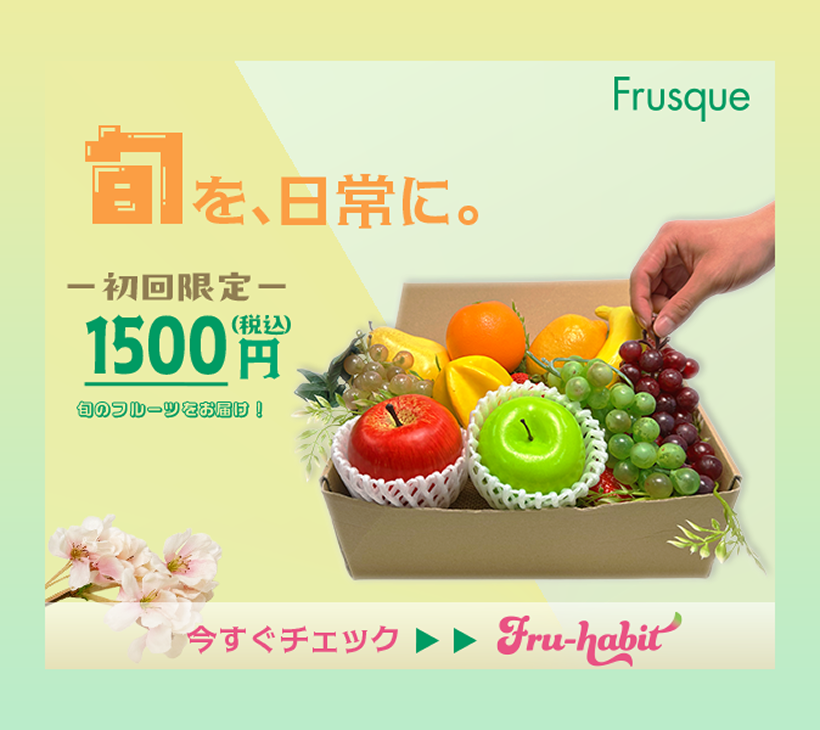
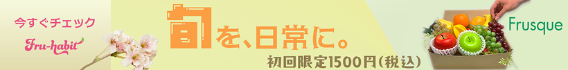
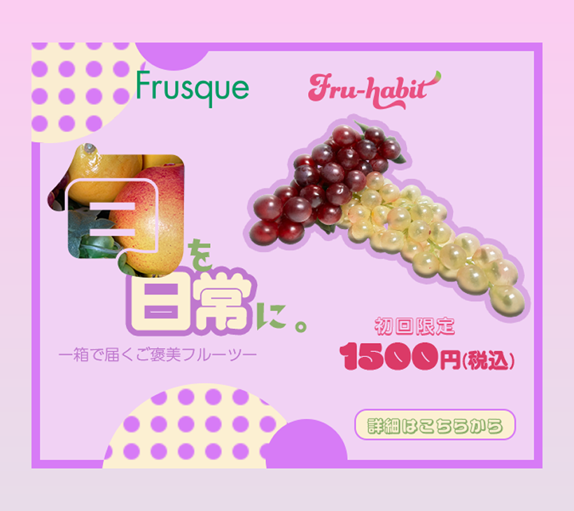
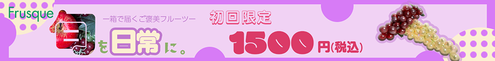

BANNER
Frusque
01 PROJECT OVERVIEW
フルーツ定期便サービス「Frusque」の販促バナーを制作。ブランドや商品の認知拡大と購入促進を目的に、フルーツの魅力やサービスの特徴を視覚的に伝えるデザインを目指しました。同一の企画をもとに、ターゲットや訴求イメージの異なる2種類のビジュアルを展開。商品のみずみずしさや手軽に楽しめる魅力を、それぞれ異なるデザインアプローチで表現しました。
02 PROJECT INFORMATION
- PROJECT
- 架空の企業 Frusque
- MY ROLE
- Banner Design / Promotion
- TOOLS
- Photoshop
- DURATION
- 撮影 : 4時間 / 企画 : 1時間 / デザイン : 2時間 / 作成 : 2時間
NATURAL & FRESH


毎日を豊かにする、フルーツのある暮らし。
TARGET
20代〜40代の男女をターゲットに、健康や美容への関心が高く、忙しい日常の中でも手軽に栄養を取り入れたいと考える層を想定。自分用だけではなく、パートナーや家族と一緒に楽しめる食品を求める人を意識しました。
DESIGN
健康的で親しみやすい印象を与えるため、明るく清潔感のあるデザインを意識しました。グリーンやイエローを基調とした配色に、カラフルなフルーツの写真を組み合わせ、自然なみずみずしさや新鮮さを表現。また、男性の手をビジュアルに取り入れることで、性別問わず親しみやすい印象に。写真の色彩を活かしながら、情報が見やすくなるよう配慮しました。
POP APPROACH


手軽に楽しむ、彩り豊かなひととき。
TARGET
20代〜30代の女性をメインターゲットに、SNSやトレンドに敏感で、見た目の印象や楽しさを重視する層を想定。また、子どもと一緒に楽しめる商品を求めるファミリー層にも共感されるよう意識しました。
DESIGN
ターゲットに親しみを感じてもらえるよう、ポップで明るいデザインを展開。丸みのあるフォントやピンク・パープルを中心とした鮮やかな配色、フルーツのビジュアルを組み合わせ、楽しさと可愛らしさを演出。商品の魅力を直感的に伝え、思わず手に取りたくなるようなビジュアルを目指しました。